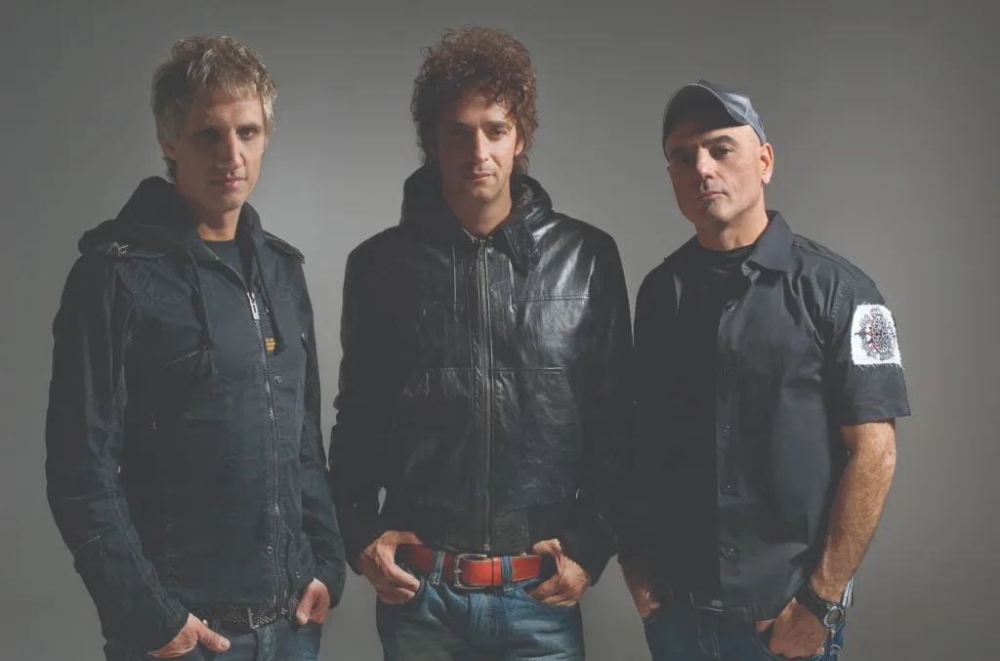

El arquitecto
del sonido.
Me gusta mucho el rock. Dentro de ese mundo, Soda Stereo tiene un lugar propio y Gustavo Cerati es, para mí, el arquitecto del sonido.
El rock como punto de partida
El rock es una de las músicas que más me gustan. No lo entiendo como una preferencia limitada a un único grupo, pero cuando tengo que elegir uno para presentarme, elijo Soda Stereo. Es una forma de concretar una afición amplia en una referencia que dice algo de mí.
La música también tiene un lugar fuera de la escucha: toco la guitarra y el bajo. Eso forma parte de mis intereses, junto con la tecnología y los viajes. Esta página recoge esa faceta sin intentar convertirla en una biografía musical exhaustiva.

Cerati, el arquitecto
Cerati es el arquitecto del sonido.
Esa es mi forma de resumir lo que admiro de él. La palabra «arquitecto» me permite expresar una idea de construcción: las partes de una canción, su carácter y la manera en que un sonido se relaciona con el siguiente.
Soda Stereo reúne a Gustavo Cerati, Zeta Bosio y Charly Alberti. Hablar del grupo es hablar también de esa combinación: voz, guitarra, bajo y batería dentro de una identidad reconocible. Mi admiración por Cerati parte de ese conjunto y de su forma de darle carácter.
Dar espacio a la música
Escuchar una canción permite acercarse a ella de muchas formas: por la voz, por una línea de bajo o por cómo entra la guitarra. Esas capas hacen que la música tenga profundidad y que una banda pueda construir un lenguaje propio.
La guitarra y el bajo son además instrumentos que toco, así que tienen un sitio personal en mi relación con el rock. En Soda Stereo encuentro una referencia para hablar de esa relación y de lo que admiro en la creación musical: un sonido con personalidad.
Ese es el motivo por el que Soda Stereo aparece entre mis cinco aficiones. Junto al cine, el deporte, el software y la carretera, la música completa una parte de lo que me interesa fuera del currículum.
Tele-Ka, para escuchar y ver
Una canción de Soda Stereo para acompañar lo que cuento sobre el grupo y dar espacio a su sonido.